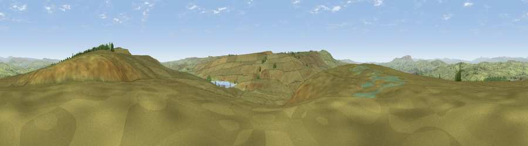

Combe Hill
#12695 in England · top 17% of its area beats it · near WycollerThe view, rendered

A 360° render of this exact spot computed from the terrain model, tree cover and land cover — summer colours, afternoon light, calibrated against photographs of famous viewpoints. Real trees, hedges and buildings will differ in detail.
The panorama
Grey silhouette: terrain skyline in each direction (720 bearings, Earth curvature and refraction included). Dashed green: skyline with trees (+15 m) and buildings (+8 m) as obstacles. Blue strip: how far the ground is visible on each bearing.
Where the view opens
Wedge length = distance to the farthest visible ground on that bearing (vegetation-aware). Rings at 10, 25 and 50 km.
What fills the view
98% grassland · 1% woodland ·
Angular shares of the visible panorama (visual magnitude), not map area. Landscape diversity 0.06 (0–1 Shannon).
Key numbers
More beautiful places nearby
The staircase of upgrades: each row has a higher view potential than everything closer. Driving times are estimates from straight-line distance, calibrated against real road routing — check an actual route before setting out.
| Place | Direction | Drive | Score |
|---|---|---|---|
| Crow Hill | S · 2 km | ~6 min | 63.2 |
| Viewpoint near Wycoller | SW · 4 km | ~9 min | 66.3 |
| Lad Law (Boulsworth Hill) | SW · 5 km | ~11 min | 71.5 |
| Viewpoint near Barley | W · 16 km | ~28 min | 76.3 |
| Pendle Hill | W · 16 km | ~28 min | 76.5 |
| Viewpoint near Otley | ENE · 25 km | ~40 min | 77.5 |
| Darwen Hill | WSW · 33 km | ~51 min | 80.7 |
| White Brow | SW · 40 km | ~60 min | 82.9 |
53.84946, -2.06128 · source: osm peak · position refined by local search. Computed location — check access rights before visiting.